预印本。
H-Spec：无需草稿器侧 KV cache 的并行 speculative decoding
Weifan Jiang1,†、Krishna Teja Chitty-Venkata2,†、Megan Flynn3、Reed Meyerson3、Zhenting Qi1、Tianyu Wu1、Eldar Kurtic3,4、Minlan Yu1、Alexandre Marques5,†
1Harvard University；2Capital One；3Red Hat；4ISTA；5NVIDIA。通讯地址：weifanjiang@g.harvard.edu。
摘要
Speculative decoding 让轻量草稿模型预测未来 token，再由目标模型验证，从而无损加速大语言模型推理。近期的 block diffusion 草稿器通过并行预测多个 token，进一步降低了草稿生成延迟。然而，现有块级草稿器将每个输入位置的目标隐藏状态投影到一份独立的草稿器侧 KV cache 中，导致每请求内存占用和 KV 写入开销随并发增加；直接原位复用目标 KV 虽能消除该缓存，却无法在整个块内维持草稿质量。我们提出混合式目标上下文注入方法：在直接复用目标 KV 的基础上，只补充最后一个输入位置的目标隐藏状态，无需独立的草稿器侧 KV cache。基于这一设计，我们提出 H-Spec，一种混合 Mamba-attention 的并行草稿器，通过互补模块利用上述两种目标上下文来源。Mamba 模块以投影后的最后一个 token 的目标隐藏状态初始化，attention 模块则原位复用目标 KV。尽管 Mamba 采用递归形式，其并行扫描仍使 H-Spec 保持块内并行草稿生成。在三个目标模型和多种任务上，相对于最优基线，H-Spec 的平均接受长度提升 5.0–13.3%，batch 大小为 1 时的 token 间延迟加速比提升 5.3–12.6%。在并发服务中，H-Spec 在所评估的各并发水平下始终实现更高吞吐量，同时保持比基线更低的 KV cache 利用率。
1 引言
大语言模型（LLM）以自回归方式生成文本：每个输出 token 都以此前全部 token 为条件。Speculative decoding（Leviathan et al., 2023）已成为解决这一顺序瓶颈的主要方案：轻量草稿模型预测接下来的 \(k\) 个 token，再由更大的目标模型在一次前向传播中验证这 \(k\) 个 token。传统草稿器以自回归方式预测未来 token（Cheng et al., 2024；Li et al., 2024a,b, 2025）；近期工作转而使用 block diffusion 模型作为草稿器，并行预测 \(k\) 个 token，进一步提高加速比（Chen et al., 2026；Huang et al., 2026；Cheng et al., 2026；Karimi et al., 2026；Inco AI, 2026）。
块级草稿器通过 KV 注入整合目标模型的上下文，使预测紧密地以目标模型为条件，但这需要独立的草稿器侧 KV cache，从而增加 GPU 内存利用率。对于每个输入 token，目标模型的隐藏状态被投影为 Key 和 Value 表示，草稿器在预测下一个块时，将这些表示作为前缀上下文使用。由于每个请求都维护各自的草稿器侧 KV cache，在并发服务下，内存使用量和 KV 写入开销都会随之（接下页）
† 工作在 Red Hat 任职期间完成。arXiv:2609.24197v1 [cs.LG]，2026 年 9 月 21 日。
（接上页）增长。因此，我们提出问题：能否设计一种并行草稿器，在不增加草稿器侧 KV cache 的情况下，仍保持强目标模型条件信息？
消除这一额外缓存最直接的方式，是让块级草稿器直接复用目标模型已有的 KV cache。为评估这种方法，我们修改代表性块级草稿器 DFlash（Chen et al., 2026）的 KV 注入机制，令其原位复用目标 KV cache。相比原始 DFlash，这种直接方案基本保留了块中靠前草稿位置的接受情况，但在多种被评估任务中，靠后位置的表现都持续下降（图 4），说明其目标上下文条件作用弱于基于隐藏状态的注入。总体而言，要消除草稿器侧 KV cache 并在整个块内维持草稿质量，仅直接复用目标 KV 还不够。
受上述研究启发，我们提出混合式上下文注入方法，在无需草稿器侧 KV cache 的情况下实现强目标条件作用。具体而言，我们结合两种互补的目标模型上下文来源：原位复用的目标 KV，以及仅在最后一个输入位置取得的目标模型隐藏状态。在因果 attention 下，最后一个输入位置的隐藏状态以整个前缀为条件，以 \(O(1)\) 存储提供完整输入摘要；目标模型已有的 KV 则不增加内存成本，提供细粒度、逐位置的信息。两者共同提供互补的目标条件信息，无需额外的 \(O(N)\) 内存开销。
基于这一新上下文注入方式，我们提出 H-Spec，一种混合 Mamba-attention 的并行草稿器，通过不同模块利用两种目标上下文来源。Mamba 模块（Gu & Dao, 2024；Dao & Gu, 2024）以最后一个输入位置的目标模型隐藏状态经投影后初始化，因为这些隐藏状态提供的前缀摘要，自然对应 Mamba 递归状态的作用。Attention 模块原位使用目标模型 KV cache，利用其逐位置上下文。尽管采用递归形式，Mamba 仍通过并行扫描计算所有草稿位置，使 H-Spec 保持块内并行草稿生成。
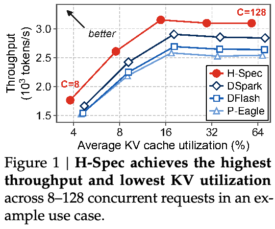
评估表明，H-Spec 同时改善了单请求草稿质量与端到端服务效率。在三个目标模型和多种任务上，相对于最优基线，H-Spec 的平均接受长度提升 5.0–13.3%，batch 大小为 1 时 token 间延迟加速比提升 5.3–12.6%，同时完全消除草稿器侧 KV cache。在 vLLM 服务环境（Kwon et al., 2023）中，H-Spec 在各个并发水平下都实现最高吞吐量，并保持最低 KV cache 利用率。图 1 展示以 Qwen3-8B 为目标模型的数学工作负载示例：在相同并发量下，从 8 到 128 个并发请求，H-Spec 均在 Pareto 意义上优于其他并行草稿器。
概括而言，我们指出现有块级草稿器中的草稿器侧 KV cache 是可避免的内存成本，并通过新的混合式目标上下文注入机制消除这一瓶颈。该设计同时改善草稿质量与服务效率。更广泛地说，结果表明，并发服务下的系统效率是草稿器设计中一个重要考量。
2 背景与动机
Speculative decoding 加速比。在每个 speculative decoding 步骤中，轻量草稿模型 \(\mathcal M_D\) 提出 \(k\) 个未来 token，目标模型 \(\mathcal M_T\) 在一次前向传播中验证它们（Leviathan et al., 2023）。实际加速比既取决于接受的草稿 token 数量，也取决于草稿器运行时间。完整接受流程见附录 A。
遵循 Sadhukhan 等人（2025），每步生成 \(k\) 个草稿 token 时，speculative decoding 的平均每 token 延迟为 \(L_{sd}=(T_D(k)+T_T)/\tau\)，其中 \(T_D(k)\) 和 \(T_T\) 分别表示 \(\mathcal M_D\) 生成 \(k\) 个草稿 token 所需的时间，以及 \(\mathcal M_T\) 单次前向传播的时间。\(1\le\tau\le k+1\) 为平均接受长度（MAL），表示每步接受的草稿 token 平均数量，加上（接下页）
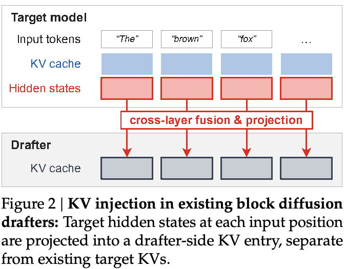
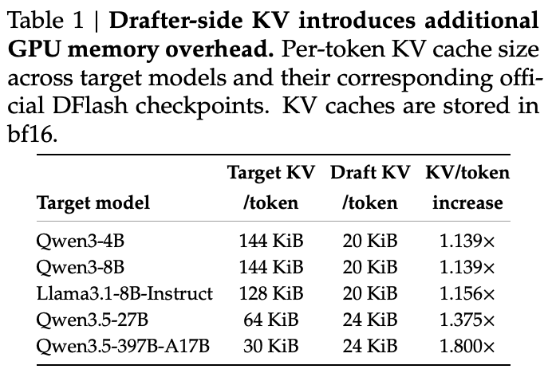
（接上页）目标模型生成的额外“bonus” token。总体加速比为 \(L_T/L_{sd}\)，其中 \(L_T\) 是 \(\mathcal M_T\) 不使用 speculative decoding 时的每 token 延迟。
用于并行草稿生成的 block diffusion。传统草稿器以自回归方式输出接下来 \(k\) 个预测（Cheng et al., 2024；Li et al., 2024a,b, 2025），其生成速度因此受串行草稿成本约束。近期的 block diffusion 草稿器在一次前向传播中生成全部 \(k\) 个草稿 token，打破这一瓶颈。代表性 block diffusion 草稿器 DFlash（Chen et al., 2026）使用堆叠的 Transformer 层，包含 attention 和 MLP 模块。Domino（Huang et al., 2026）与 DSpark（Cheng et al., 2026）进一步附加轻量顺序预测头，根据前序信息细化每个草稿位置，将并行草稿生成与因果修正结合。
块级草稿生成中的 KV 注入。LLM 隐藏表示捕获长距离依赖，并编码对预测未来 token 有用的信息（Samragh et al., 2025）。因此，现有块级草稿器采用利用目标隐藏状态的 KV 注入机制（图 2）。在每个输入位置，将选定目标模型层的隐藏状态融合并投影为 KV 表示。草稿器预测下一个块时，将这些 KV 作为前缀上下文进行 attention，使草稿预测紧密地以目标模型为条件，提高接受率。
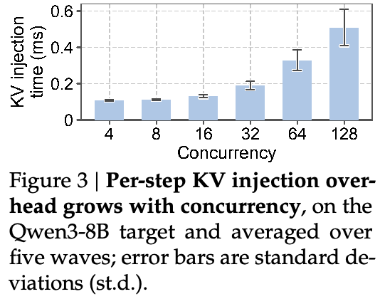
局限：草稿器侧 KV 开销。虽然 KV 注入提供了强目标上下文条件信息，但在每个请求的整个生命周期内，都需要在 GPU 内存中维护额外的草稿器侧 KV cache。表 1 使用 DFlash 作者发布的官方 checkpoint 量化这一成本：相比只部署目标模型，草稿器将每 token KV 内存增加至 1.1–1.8×。此外，随着进行中的请求数量增加，内存使用量和 KV 注入开销也上升。如图 3 所示，在 Qwen3-8B 上，并发请求数从 4 增至 128 时，每轮草稿器 KV 注入时间增加 4.7×。
3 方法：H-Spec
3.1 直接方案：直接复用目标 KV 的 DFlash
消除草稿器侧 KV cache 最直接的方法，是让草稿器直接对目标模型已有的 KV cache 进行 attention。我们在相同训练方案下，对比采用原始 KV 注入和直接复用目标 KV 的 DFlash，以评估该方法。
原始 DFlash 从均匀间隔的五个目标模型层提取隐藏状态，将其融合并投影为五层 block diffusion 草稿器的草稿器侧 KV 表示。我们的修改版本保留相同的五层结构，但每个草稿器层直接复用（接下页）
（接上页）所选五个目标层中某一层的 KV cache。我们不跨目标层融合 KV，因为这会要求将融合后的 KV 实体化，从而重新引入草稿器侧的额外内存。
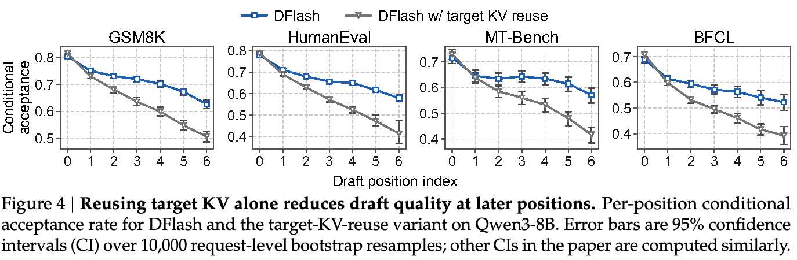
如图 4 所示，直接复用目标 KV 在靠前草稿位置（即索引 0 和 1）基本保持 DFlash 的草稿能力，在数学、编程、聊天和 agent 任务上，条件接受率差异为 −2.07 至 +1.91 个百分点。然而，差距在靠后位置扩大：四项任务中，在索引 2、4 和 6 处，最大分别达到 6.3、12.5 和 16.5 个百分点。总体而言，仅直接复用目标 KV 无法保持传统基于隐藏状态的 KV 注入所实现的草稿质量，因此需要更丰富的上下文注入。
3.2 混合式目标上下文注入
隐藏状态与 KV 表示的重要区别，在于它们为草稿生成提供的上下文信息。在每个输入位置，隐藏状态整合前序 token 的信息，并编码有助于预测未来 token 的信息（Samragh et al., 2025）。相比之下，目标 KV 提供供未来 query 检索的逐位置信息，却缺乏覆盖整个输入的显式上下文摘要。
基于这一观察，我们提出新的混合式目标上下文注入方法，在直接复用 KV 的基础上，仅补充最后一个输入位置的目标模型隐藏状态。在因果 attention 下，最后一个位置的隐藏状态以此前所有输入 token 为条件，向草稿器提供整个输入序列的紧凑摘要。与此同时，目标 KV 提供细粒度逐位置上下文，与这一紧凑摘要互补。关键在于，只处理并保存最后一个输入位置的隐藏状态，相对于输入长度只引入 \(O(1)\) 开销，因而消除了 \(O(N)\) 的草稿器侧 KV cache。剩下的挑战，是设计能够有效利用两种上下文来源的并行草稿器架构。
3.3 H-Spec 架构
我们提出 H-Spec，一种围绕上述混合式目标上下文注入方法构建的块内并行草稿器。每种上下文来源均由与其所提供信息相匹配的模块使用。具体而言，Mamba 模块由最后一个输入位置的目标隐藏状态经投影后初始化；其完整输入表示自然对应 Mamba 递归状态的作用。Attention 模块原位使用目标 KV。图 5 展示整体设计。
3.3.1 使用最后一个 token 的隐藏状态初始化状态的 Mamba
Mamba 是递归的选择性状态空间架构，将前序上下文压缩为固定大小的状态，并在每个位置更新状态、向前传递，为后续 token 提供条件（Gu & Dao, 2024）。给定输入 \(x_i\) 和前序状态 \(S_{i-1}\)，状态更新为 \(S_i=\bar A_iS_{i-1}+\bar B_ix_i\)，其中 \(\bar A_i\) 和 \(\bar B_i\) 依赖输入。Mamba-2 保留底层选择性递归形式，但在其 State Space Duality（SSD）框架下采用更具结构的逐 head 状态转移（Dao & Gu, 2024）。因此，H-Spec 使用 Mamba-2，以获得更好的运行效率。
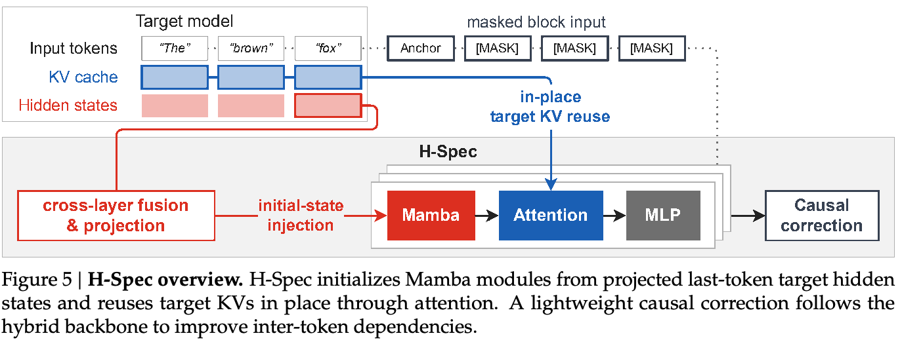
初始状态注入。如前所述，最后一个输入位置的目标隐藏状态以此前全部上下文为条件，自然对应 Mamba 递归状态的作用。因此，我们使用这些隐藏状态初始化 Mamba：在选定的目标模型层之间融合最后一个 token 的隐藏状态，投影后作为 Mamba 的初始递归状态，使后续草稿生成以目标模型的完整输入上下文为条件。
跨层隐藏状态融合。令 \(h_n^{(m)}\) 表示目标模型第 \(m\) 层在最后一个输入位置 \(n\) 的隐藏状态，\(\mathcal M\) 为选定用于上下文注入的目标层集合。H-Spec 按以下方式得到 Mamba-2 初始状态 \(S_{\mathrm{init}}\)：
\[F_n(\mathcal M)=\operatorname{Proj}_r\!\left(\operatorname{Concat}\!\left(\{h_n^{(m)}\}_{m\in\mathcal M}\right)\right),\quad S_{\mathrm{init}}=\operatorname{Proj}_{d_S}\!\left(F_n(\mathcal M)\right).\]其中 \(r\) 为跨层融合使用的中间秩，\(d_S\) 为 Mamba-2 递归状态展平后的维度。H-Spec 的全部草稿器层共享同一组 \(\operatorname{Proj}_r\) 和 \(\operatorname{Proj}_{d_S}\) 权重，因此每次草稿器前向传播仅计算一次初始状态。
并行草稿生成兼容性。尽管具有递归性质，Mamba 的线性状态递推使其可以并行计算各序列位置。在 H-Spec 中，Mamba kernel 从注入的初始状态出发，一次遍历计算全部草稿位置的状态演化，避免串行执行。这让混合 Mamba-attention 主干保留并行草稿生成能力。
依赖输入的选择性。沿用现有 block diffusion 草稿器，我们不为被 mask 的块输入添加位置 embeddings。尽管第一个 Mamba 模块在每个草稿位置都接收相同的 mask-token embedding，其递归扫描仍产生依赖位置的隐藏状态。Attention 模块还通过 RoPE（第 3.3.2 节）引入位置信息。因此，第一个模块之后的 Mamba 模块接收的隐藏状态在各草稿位置间不同，从而保持块内依赖输入的选择性。
3.3.2 原位复用目标 KV 的 attention 模块
在每个 H-Spec 层中，attention 模块位于 Mamba 模块之后，提供细粒度、位置级的上下文，与 Mamba 的紧凑递归形式互补。
KV 维度。H-Spec 的 attention 模块匹配目标模型的 KV 维度，保证可原样复用目标 KV。我们也使 H-Spec 的 attention head 和 KV head 数量与目标模型一致，尽管实际中仅复用部分目标 KV head 可能已经足够，并能进一步降低 attention 开销；我们将这一设计空间留作未来工作。
逐层 KV 映射。每个 H-Spec 层的 attention 模块使用目标模型某一层的 KV。这使 H-Spec 能引入目标模型不同深度的信息，同时保持原位 KV 复用。相比之下，跨层 KV 融合要求在内存中额外存储融合后的 KV，会重新引入草稿器 KV cache。
Attention 掩码。我们在被 mask 的块上采用因果 attention，以复用的目标 KV 作为前缀上下文，使草稿紧密地以目标模型为条件。为保持长上下文稳定性，使用窗口为 2,048 个 token 的 sliding-window attention（SWA）（Eldenk et al., 2026）。
被 mask 的块输入的位置对齐。由于内存中的目标 KV 已经过 RoPE，被 mask 的块的 Q/K 向量必须使用目标模型的 RoPE \(\theta\)，位置索引从目标前缀接续，保证前缀和草稿块之间的位置编码一致。
3.3.3 因果修正
Block diffusion 模型并行处理全部草稿位置，但可能削弱相邻位置的因果依赖，降低草稿序列的连贯性。因此，近期工作为并行主干增添辅助组件，强化位置之间的依赖。H-Spec 具体采用 DSpark 的 Markov head（Cheng et al., 2026），将其置于混合主干之后：根据紧邻前一位置的预测，调整各草稿位置的预测 logits，引入一阶 Markov 依赖。
因果修正属于 H-Spec 架构的一部分，但不是本文贡献；混合主干独立于具体因果修正机制，可与不同机制搭配。将其他因果修正机制与混合主干结合评估，是我们留待未来的重要工作。
架构配置。为公平比较，我们使 H-Spec 的可训练参数量和总参数量与推荐的五层 DFlash／DSpark 设置一致（Chen et al., 2026；Cheng et al., 2026）。H-Spec 与基线共有组件的维度也保持一致，包括 attention、MLP 和 DSpark Markov head。由于 H-Spec 每层额外包含 Mamba 模块，我们使用更浅的四层草稿器：三层完整的 Mamba-attention-MLP，以及一层部分结构的 Mamba-MLP。在部分层中保留 Mamba 而非 attention，使 H-Spec 最接近基线参数预算。附录 B.1 详细介绍其余 H-Spec 配置与维度设置。
4 评估
模型与基准。我们在 Llama3.1-8B-IT（Grattafiori et al., 2024）及 Qwen3 4B 和 8B（Yang et al., 2025）目标模型上开展实验，覆盖通用和推理 LLM 系列。评估涵盖数学、问答、聊天、RAG、摘要、翻译、编程及工具调用等八类任务。前六项来自 Spec-Bench（Xia et al., 2024），另加入 HumanEval（Chen et al., 2021）与 BFCL（Patil et al., 2025），扩大编程和工具调用覆盖范围。
基线与训练配置。我们将 H-Spec 与并行草稿器 P-Eagle（Hui et al., 2026）、DFlash（Chen et al., 2026）及 DSpark（Cheng et al., 2026）比较。由于官方基线 checkpoint 使用不同训练方案，为进行受控比较，我们利用 vLLM 生态的 speculative decoding 训练框架 Speculators（Red Hat, 2025），在统一训练方案下复现全部基线与 H-Spec。所有草稿器均在从 Magpie（Xu et al., 2025）和 Ultrachat（Ding et al., 2023）抽取的 100k 样本上训练 5 个 epoch，优化器步数一致。对于 Qwen3 目标模型，我们使用目标模型生成的启用推理的回答，以便更好地对齐草稿器。附录 B 详述其余基线与训练设置。
指标。我们在单请求和服务负载下评估性能。单请求时，报告 batch 大小为 1 下的平均接受长度（MAL，记作 \(\tau\)），以及相对于不使用 speculative decoding 的 token 间延迟（ITL）加速比。服务负载下，报告不同并发量的吞吐量（每秒输出 token 数）与 KV cache 利用率（%）。
其他设置。除非另有说明，我们使用各目标模型的默认采样参数：Llama3.1 为 temp=0.6/topP=0.9，Qwen3 为 temp=0.6/topP=0.95/topK=20，每步生成 7 个草稿 token。第 4.4 节报告对这些设置的敏感性。生成速度和 KV cache 利用率在单块 NVIDIA A100 80G GPU 上测量。
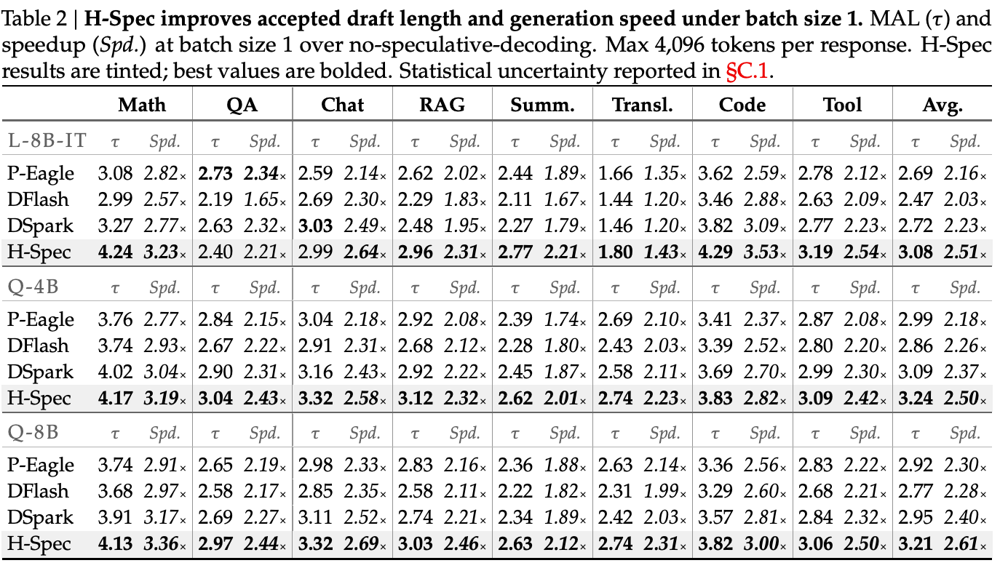
4.1 单请求接受长度与加速比
如表 2 所示，对 Llama、Qwen3 4B 和 8B 目标模型，相对于最优基线，H-Spec 在八项任务上的未加权平均 \(\tau\) 分别提升 13.3%、5.0% 和 8.7%，Spd. 分别提升 12.6%、5.3% 和 8.7%。六项比较的配对 bootstrap 95% 置信区间均完全高于零，表明提升具有统计显著性（附录 C.1）。值得注意的是，这些提升是在 H-Spec 按设计不需要任何草稿器侧 KV cache 的情况下实现的，而全部基线都需要该缓存。
扩展评估任务。附录 D.1 评估 DSpark 作者发布的九任务套件。在三个目标模型上，相对于最优基线，H-Spec 的平均 \(\tau\) 提升 3.8–12.5%，Spd. 提升 4.3–13.1%。关键在于，对于所有目标模型的每项任务，H-Spec 的 \(\tau\) 与 Spd. 均具有统计显著的优势，表明跨领域增益一致。
4.2 使用 vLLM 的服务性能
我们使用 vLLM（Kwon et al., 2023）评估 H-Spec 的服务性能。遵循 DSpark 的评估，分别在数学、编程和聊天领域采用一个工作负载：MATH（Hendrycks et al., 2021）、LiveCodeBench（Jain et al., 2025）和 Alpaca（Taori et al., 2023），各抽样 1,000 个请求。在并发量 \(C\in\{8,16,32,64,128\}\) 下发送请求，报告服务期间闭环吞吐量及平均 KV cache 利用率。
在每个被评估并发水平下，H-Spec 均实现最高吞吐量和最低 KV cache 利用率（图 6）。相对于最强基线，三个目标模型的峰值吞吐量分别提升 13.0–17.3%、5.1–7.4% 和 7.6–9.7%；在所有设置下，相对于内存效率最高的基线，平均 KV cache 利用率相对降低 4.3–24.6%。H-Spec 的吞吐量优势通常随并发量增大。例如，在 Qwen3-8B 上，从 \(C=8\) 增至 128 时，三个任务中相对于最优基线的优势增至原来的 1.13–1.58×。这与基线 KV 注入开销随并发扩展、而 H-Spec 避免该开销的观察一致。
与 DFlash-2 的初步比较。附录 D.2 将 H-Spec 与我们遵循作者流程（Inco AI, 2026）实现的 DFlash-2 比较，因为尚无官方训练流水线。在 Qwen3-8B 上，所有任务和并发水平中，H-Spec 均实现更高吞吐量和更低 KV cache 利用率。由于 DFlash-2 保留 DFlash 的 block diffusion 主干，其草稿器侧 KV 注入开销仍随并发量增长（图 3）。
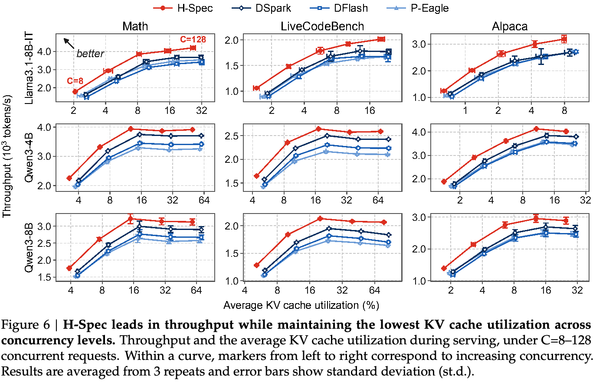
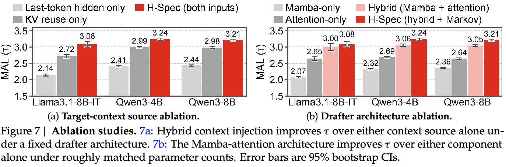
4.3 消融研究
所有消融变体均使用与完整 H-Spec 相同的方案从头训练。本文其余分析报告表 2 八项任务的未加权平均 \(\tau\) 和 Spd.，为简洁省略逐任务结果。
目标上下文来源消融。我们验证核心假设：目标模型最后一个 token 的隐藏状态与 KV 为草稿生成提供互补上下文。因此保持 H-Spec 架构不变，每次消融一种上下文来源。仅最后 token 隐藏状态（Last-token-hidden-only）变体将 attention 限制在被 mask 的块位置，移除前缀上下文中的目标 KV；仅复用 KV（KV-reuse-only）变体将 Mamba 状态初始化为零，并移除不再需要的最后 token 隐藏状态跨层融合与投影权重。
图 7a 表明，相比完整的混合上下文注入，只使用任一目标上下文来源都会降低草稿质量。在固定草稿器架构下，仅使用最后 token 隐藏状态或仅使用目标 KV，会使三个目标模型的平均 \(\tau\) 分别降低 24.1–30.5% 和 7.1–11.7%。这些结果确认，两种上下文来源是互补的，不能相互替代。
草稿器架构消融。上述研究只消融输入上下文。这里还改变草稿器架构：Mamba-only 仅包含 Mamba-MLP 层，Attention-only 仅包含 attention-MLP 层，而 Hybrid 结合 Mamba 和 attention。前两者使用五层，以使总参数量大致匹配 H-Spec；各目标模型上的偏差至多为 5.2%，详细配置见附录 B.4。图 7b 表明，在总参数量大致一致时，混合主干相对于 Mamba-only 的 \(\tau\) 提升 28.9–45.1%，相对于 Attention-only 提升 13.3–15.3%，说明组合架构优于任一单独模块。
草稿器运行时间扩展性。吞吐量同时取决于 MAL 与草稿器运行时间。为分离两者影响，我们在受控设置下比较 Qwen3-8B 草稿器的混合 Mamba-attention 主干与 block diffusion 主干运行时间：使用输入 16、输出 2,048 个 token 的合成请求，并令每步全部草稿都接受。图 8 报告混合主干前向传播时间的相对加速比（正值表示混合主干更快）：分别在各并发量 \(C\) 下对 decoding 步骤平均（8a），以及在固定 \(C=128\) 下按输入长度平均（以 256 token 分桶，8b）。
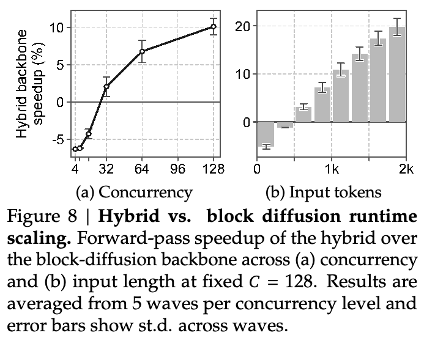
低并发（\(C<32\)）时，混合主干的草稿生成慢于 block diffusion 主干，说明在参数量一致时其计算图更深。但随着 \(C\) 增加，由于避免 KV 注入开销，其扩展表现更好。随着输入长度增加，混合主干最初较慢，但超过约 512 个 token 后变得更快。Mamba 每步运行时间相对于输入长度为 \(O(1)\)，而 attention 为 \(O(N)\)；因此更少的 attention 模块有利于扩展到更长输入。总体而言，混合主干对高并发和长上下文部署具有更好的运行时间扩展性。
4.4 敏感性分析
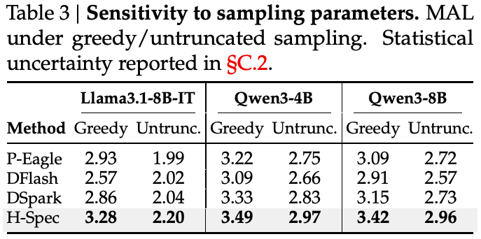
对采样参数的敏感性。我们验证，在表 2 默认设置之外的扩展采样配置下，H-Spec 的 \(\tau\) 优势仍存在。如表 3 所示，在贪心采样（temp=0，禁用 topP／topK）下，H-Spec 相对于最优基线使三个目标模型的 \(\tau\) 提升 4.8–12.0%。在不截断的采样（temp=1, topP=1，禁用 topK）下，所有草稿器的表现均下降，但 H-Spec 的 \(\tau\) 仍领先 4.7–8.4%。
后续分析报告 Qwen3-8B 目标模型的结果；其他目标模型结果见附录 D.3。
对草稿长度的敏感性。我们使用相同的以 \(k=7\) 训练的草稿器，将推理时草稿长度设为 \(k\in\{3,5,7\}\)。如表 4 所示，在所有测试 \(k\) 值下，H-Spec 均为表现最好的草稿器。\(k=3/5/7\) 时，相对于最优基线，H-Spec 的 \(\tau\) 优势分别为 4.3/5.8/8.7%，加速比优势分别为 5.3/6.0/8.7%。加速比遵循相同总体趋势，说明 H-Spec 对推理时草稿长度变化具有稳健性，且通常在更长草稿下优势更大。
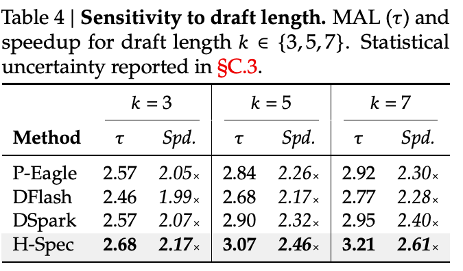
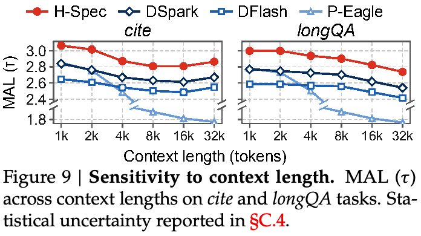
对上下文长度的敏感性。以往研究表明，草稿质量可能在较长上下文下降（Eldenk et al., 2026）。因此，我们在 HELMET（Yen et al., 2025）的 cite 和 longQA 两项任务上验证 H-Spec 的稳健性；两者支持多个上下文长度分桶的评估。如图 9 所示，在两项任务和所有上下文长度下，H-Spec 的 \(\tau\) 相对于最优基线均保持 6.8–9.2% 的优势。从 1K 到 32K，cite 上优势仅从 +7.5% 变为 +7.2%，longQA 上则保持 +7.8%，表明 H-Spec 的优势随上下文长度增加而持续。
向微调目标模型迁移。我们保持草稿器不变，将其部署在从原训练目标模型微调得到的目标模型上，结果见附录 D.4。总体而言，在目标模型权重和／或聊天模板发生变化后，H-Spec 仍保持最优 \(\tau\) 与 Spd.，体现无需重新训练的零样本迁移能力。
5 相关工作、局限性、结论与未来工作
相关工作。Eagle 系列（Li et al., 2024a,b, 2025）和 ReDrafter（Cheng et al., 2024）等早期草稿器以自回归方式预测 token。P-Eagle（Hui et al., 2026）通过共享的可学习隐藏状态预测多个未来位置，将 Eagle 扩展至并行草稿生成。DFlash（Chen et al., 2026）改用 block diffusion 草稿器，将目标模型隐藏状态投影到独立的草稿器侧 KV cache，以目标模型为条件。后续 Domino（Huang et al., 2026）、DSpark（Cheng et al., 2026）、DBlast（Karimi et al., 2026）和 DFlash-2（Inco AI, 2026）保留 block diffusion 结构，但通过不同辅助组件改善 token 间依赖。相比之下，H-Spec 偏离传统 block diffusion 架构，通过 Mamba-attention 架构引入混合式目标上下文注入，消除独立的草稿器侧 KV cache。
另一正交方向是增强目标模型，使其无需独立草稿器即可预测多个未来 token，例如 Medusa（Cai et al., 2024）、MTP（Gloeckle et al., 2024）和 Orthrus（Nguyen et al., 2026）。H-Spec 则遵循标准 speculative decoding 设置，完全不改动目标模型。
局限性。为原样复用目标 KV，H-Spec 要求草稿器侧 K 和 V 的维度与目标模型一致，相对于基于隐藏状态的 KV 注入增加了一项架构约束。在较低并发或较短输入时，混合主干的草稿生成较慢，反映出相同参数量下更深的计算图；在较高并发或较长输入时，混合架构具有更好的扩展性，这一趋势反转（图 8）。
结论与未来工作。本文指出，现有 block diffusion 草稿器中的草稿器侧 KV cache 是可避免的瓶颈。我们通过新的混合式目标上下文注入机制将其消除，结合最后一个 token 的目标隐藏状态与原位目标 KV 复用。基于该机制，提出 H-Spec，一种同时改善单请求性能与并发服务效率的并行草稿器。更广泛地说，结果强调了并发服务下系统效率在草稿器架构设计中的重要性。未来将探索其他目标层选择策略、通过部分目标 KV head 复用减少草稿器 attention 开销，以及适用于混合主干的其他因果修正方案。
参考文献
Tianle Cai, Yuhong Li, Zhengyang Geng, Hongwu Peng, Jason D. Lee, Deming Chen, and Tri Dao. Medusa：采用多个 decoding head 的简单 LLM 推理加速框架。 InProceedings of the 41st International Conference on Machine Learning, ICML’24. JMLR.org, 2024.
Jian Chen, Yesheng Liang, and Zhijian Liu. DFlash：用于快速 speculative decoding 的 block diffusion。 In Proceedings of the International Conference on Machine Learning (ICML), 2026.
Mark Chen, Jerry Tworek, Heewoo Jun, Qiming Yuan, Henrique Ponde de Oliveira Pinto, Jared Kaplan, Harri Edwards, Yuri Burda, Nicholas Joseph, Greg Brockman, Alex Ray, Raul Puri, Gretchen Krueger, Michael Petrov, Heidy Khlaaf, Girish Sastry, Pamela Mishkin, Brooke Chan, Scott Gray, Nick Ryder, Mikhail Pavlov, Alethea Power, Lukasz Kaiser, Mohammad Bavarian, Clemens Winter, Philippe Tillet, Felipe Petroski Such, Dave Cummings, Matthias Plappert, Fotios Chantzis, Elizabeth Barnes, Ariel Herbert-Voss, William Hebgen Guss, Alex Nichol, Alex Paino, Nikolas Tezak, Jie Tang, Igor Babuschkin, Suchir Balaji, Shantanu Jain, William Saunders, Christopher Hesse, Andrew N. Carr, Jan Leike, Josh Achiam, Vedant Misra, Evan Morikawa, Alec Radford, Matthew Knight, Miles Brundage, Mira Murati, Katie Mayer, Peter Welinder, Bob McGrew, Dario Amodei, Sam McCandlish, Ilya Sutskever, and Wojciech Zaremba. 评估使用代码训练的大语言模型， 2021. URL https://arxiv.org/abs/2107.03374.
Xin Cheng, Xingkai Yu, Chenze Shao, Jiashi Li, Yunfan Xiong, Yi Qian, Jiaqi Zhu, Shirong Ma, Xiaokang Zhang, Jiasheng Ye, Qinyu Chen, Chengqi Deng, Jiping Yu, Damai Dai, Zhengyan Zhang, Yixuan Wei, Yixuan Tan, Wenkai Yang, Runxin Xu, Yu Wu, Zhean Xu, Xuanyu Wang, Muyang Chen, Rui Tian, Xiao Bi, Zhewen Hao, Shaoyuan Chen, Huanqi Cao, Wentao Zhang, Anyi Xu, Huishuai Zhang, Dongyan Zhao, and Wenfeng Liang. DSpark：采用半自回归生成、按置信度调度的 speculative decoding， 2026. URL https://arxiv.org/abs/2607.05147.
Yunfei Cheng, Aonan Zhang, Xuanyu Zhang, Chong Wang, and Yi Wang. 用于大语言模型快速 speculative decoding 的递归草稿器， 2024. URL https://arxiv.org/abs/2403.09919.
Tri Dao and Albert Gu. Transformer 是 SSM：通过结构化状态空间对偶得到广义模型与高效算法。 InProceedings of the 41st International Conference on Machine Learning, ICML’24. JMLR.org, 2024.
Ning Ding, Yulin Chen, Bokai Xu, Yujia Qin, Shengding Hu, Zhiyuan Liu, Maosong Sun, and Bowen Zhou. 通过扩展高质量指令对话增强聊天语言模型。 In Houda Bouamor, Juan Pino, and Kalika Bali (eds.),Proceedings of the 2023 Conference on Empirical Methods in Natural Language Processing, pp. 3029–3051, Singapore, December 2023. Association for Computational Linguistics. doi: 10.18653/v1/2023.emnlp-main.183. URL https://aclanthology.org/2023.emnlp-main.183/.
Do˘ gaç Eldenk, Payal Mohapatra, Yigitcan Comlek, Kaan Oktay, Hongyang Zhang, and Stephen Xia. Attention 漂移：自回归 speculative decoding 模型学到了什么， 2026. URL https://arxiv.org/abs/2605.09992.
Fabian Gloeckle, Badr Youbi Idrissi, Baptiste Rozière, David Lopez-Paz, and Gabriel Synnaeve. 通过多 token 预测获得更好且更快的大语言模型。 InProceedings of the 41st International Conference on Machine Learning, ICML’24. JMLR.org, 2024.
Raghavv Goel, Sudhanshu Agrawal, Mukul Gagrani, Junyoung Park, Yifan Zao, He Zhang, Tian Liu, Yiping Yang, Xin Yuan, Jiuyan Lu, Chris Lott, and Mingu Lee. VocabTrim：通过词表剪枝实现高效 LLM speculative decoding， 2025. URL https://arxiv.org/abs/2506.22694.
Aaron Grattafiori, Abhimanyu Dubey, Abhinav Jauhri, Abhinav Pandey, Abhishek Kadian, Ahmad Al-Dahle, Aiesha Letman, Akhil Mathur, Alan Schelten, Alex Vaughan, Amy Yang, Angela Fan, Anirudh Goyal, Anthony Hartshorn, Aobo Yang, Archi Mitra, Archie Sravankumar, Artem Korenev, Arthur Hinsvark, Arun Rao, Aston Zhang, Aurelien Rodriguez, Austen Gregerson, Ava Spataru, Baptiste Roziere, Bethany Biron, Binh Tang, Bobbie Chern, Charlotte Caucheteux, Chaya Nayak, Chloe Bi, Chris Marra, Chris McConnell, Christian Keller, Christophe Touret, Chunyang Wu, Corinne
Wong, Cristian Canton Ferrer, Cyrus Nikolaidis, Damien Allonsius, Daniel Song, Danielle Pintz, Danny Livshits, Danny Wyatt, David Esiobu, Dhruv Choudhary, Dhruv Mahajan, Diego Garcia-Olano, Diego Perino, Dieuwke Hupkes, Egor Lakomkin, Ehab AlBadawy, Elina Lobanova, Emily Dinan, Eric Michael Smith, Filip Radenovic, Francisco Guzmán, Frank Zhang, Gabriel Synnaeve, Gabrielle Lee, Georgia Lewis Anderson, Govind Thattai, Graeme Nail, Gregoire Mialon, Guan Pang, Guillem Cucurell, Hailey Nguyen, Hannah Korevaar, Hu Xu, Hugo Touvron, Iliyan Zarov, Imanol Arrieta Ibarra, Isabel Kloumann, Ishan Misra, Ivan Evtimov, Jack Zhang, Jade Copet, Jaewon Lee, Jan Geffert, Jana Vranes, Jason Park, Jay Mahadeokar, Jeet Shah, Jelmer van der Linde, Jennifer Billock, Jenny Hong, Jenya Lee, Jeremy Fu, Jianfeng Chi, Jianyu Huang, Jiawen Liu, Jie Wang, Jiecao Yu, Joanna Bitton, Joe Spisak, Jongsoo Park, Joseph Rocca, Joshua Johnstun, Joshua Saxe, Junteng Jia, Kalyan Vasuden Alwala, Karthik Prasad, Kartikeya Upasani, Kate Plawiak, Ke Li, Kenneth Heafield, Kevin Stone, Khalid El-Arini, Krithika Iyer, Kshitiz Malik, Kuenley Chiu, Kunal Bhalla, Kushal Lakhotia, Lauren Rantala-Yeary, Laurens van der Maaten, Lawrence Chen, Liang Tan, Liz Jenkins, Louis Martin, Lovish Madaan, Lubo Malo, Lukas Blecher, Lukas Landzaat, Luke de Oliveira, Madeline Muzzi, Mahesh Pasupuleti, Mannat Singh, Manohar Paluri, Marcin Kardas, Maria Tsimpoukelli, Mathew Oldham, Mathieu Rita, Maya Pavlova, Melanie Kambadur, Mike Lewis, Min Si, Mitesh Kumar Singh, Mona Hassan, Naman Goyal, Narjes Torabi, Nikolay Bashlykov, Nikolay Bogoychev, Niladri Chatterji, Ning Zhang, Olivier Duchenne, Onur Çelebi, Patrick Alrassy, Pengchuan Zhang, Pengwei Li, Petar Vasic, Peter Weng, Prajjwal Bhargava, Pratik Dubal, Praveen Krishnan, Punit Singh Koura, Puxin Xu, Qing He, Qingxiao Dong, Ragavan Srinivasan, Raj Ganapathy, Ramon Calderer, Ricardo Silveira Cabral, Robert Stojnic, Roberta Raileanu, Rohan Maheswari, Rohit Girdhar, Rohit Patel, Romain Sauvestre, Ronnie Polidoro, Roshan Sumbaly, Ross Taylor, Ruan Silva, Rui Hou, Rui Wang, Saghar Hosseini, Sahana Chennabasappa, Sanjay Singh, Sean Bell, Seohyun Sonia Kim, Sergey Edunov, Shaoliang Nie, Sharan Narang, Sharath Raparthy, Sheng Shen, Shengye Wan, Shruti Bhosale, Shun Zhang, Simon Vandenhende, Soumya Batra, Spencer Whitman, Sten Sootla, Stephane Collot, Suchin Gururangan, Sydney Borodinsky, Tamar Herman, Tara Fowler, Tarek Sheasha, Thomas Georgiou, Thomas Scialom, Tobias Speckbacher, Todor Mihaylov, Tong Xiao, Ujjwal Karn, Vedanuj Goswami, Vibhor Gupta, Vignesh Ramanathan, Viktor Kerkez, Vincent Gonguet, Virginie Do, Vish Vogeti, Vítor Albiero, Vladan Petrovic, Weiwei Chu, Wenhan Xiong, Wenyin Fu, Whitney Meers, Xavier Martinet, Xiaodong Wang, Xiaofang Wang, Xiaoqing Ellen Tan, Xide Xia, Xinfeng Xie, Xuchao Jia, Xuewei Wang, Yaelle Goldschlag, Yashesh Gaur, Yasmine Babaei, Yi Wen, Yiwen Song, Yuchen Zhang, Yue Li, Yuning Mao, Zacharie Delpierre Coudert, Zheng Yan, Zhengxing Chen, Zoe Papakipos, Aaditya Singh, Aayushi Srivastava, Abha Jain, Adam Kelsey, Adam Shajnfeld, Adithya Gangidi, Adolfo Victoria, Ahuva Goldstand, Ajay Menon, Ajay Sharma, Alex Boesenberg, Alexei Baevski, Allie Feinstein, Amanda Kallet, Amit Sangani, Amos Teo, Anam Yunus, Andrei Lupu, Andres Alvarado, Andrew Caples, Andrew Gu, Andrew Ho, Andrew Poulton, Andrew Ryan, Ankit Ramchandani, Annie Dong, Annie Franco, Anuj Goyal, Aparajita Saraf, Arkabandhu Chowdhury, Ashley Gabriel, Ashwin Bharambe, Assaf Eisenman, Azadeh Yazdan, Beau James, Ben Maurer, Benjamin Leonhardi, Bernie Huang, Beth Loyd, Beto De Paola, Bhargavi Paranjape, Bing Liu, Bo Wu, Boyu Ni, Braden Hancock, Bram Wasti, Brandon Spence, Brani Stojkovic, Brian Gamido, Britt Montalvo, Carl Parker, Carly Burton, Catalina Mejia, Ce Liu, Changhan Wang, Changkyu Kim, Chao Zhou, Chester Hu, Ching-Hsiang Chu, Chris Cai, Chris Tindal, Christoph Feichtenhofer, Cynthia Gao, Damon Civin, Dana Beaty, Daniel Kreymer, Daniel Li, David Adkins, David Xu, Davide Testuggine, Delia David, Devi Parikh, Diana Liskovich, Didem Foss, Dingkang Wang, Duc Le, Dustin Holland, Edward Dowling, Eissa Jamil, Elaine Montgomery, Eleonora Presani, Emily Hahn, Emily Wood, Eric-Tuan Le, Erik Brinkman, Esteban Arcaute, Evan Dunbar, Evan Smothers, Fei Sun, Felix Kreuk, Feng Tian, Filippos Kokkinos, Firat Ozgenel, Francesco Caggioni, Frank Kanayet, Frank Seide, Gabriela Medina Florez, Gabriella Schwarz, Gada Badeer, Georgia Swee, Gil Halpern, Grant Herman, Grigory Sizov, Guangyi, Zhang, Guna Lakshminarayanan, Hakan Inan, Hamid Shojanazeri, Han Zou, Hannah Wang, Hanwen Zha, Haroun Habeeb, Harrison Rudolph, Helen Suk, Henry Aspegren, Hunter Goldman, Hongyuan Zhan, Ibrahim Damlaj, Igor Molybog, Igor Tufanov, Ilias Leontiadis, Irina-Elena Veliche, Itai Gat, Jake Weissman, James Geboski, James Kohli, Janice Lam, Japhet Asher, Jean-Baptiste Gaya, Jeff Marcus, Jeff Tang, Jennifer Chan, Jenny Zhen, Jeremy Reizenstein, Jeremy Teboul, Jessica Zhong, Jian Jin, Jingyi Yang, Joe Cummings, Jon Carvill, Jon Shepard, Jonathan McPhie, Jonathan Torres, Josh Ginsburg, Junjie Wang, Kai Wu, Kam Hou U, Karan Saxena, Kartikay Khandelwal, Katayoun Zand, Kathy Matosich, Kaushik Veeraraghavan, Kelly Michelena, Keqian Li, Kiran Jagadeesh, Kun Huang, Kunal Chawla, Kyle Huang,
Lailin Chen, Lakshya Garg, Lavender A, Leandro Silva, Lee Bell, Lei Zhang, Liangpeng Guo, Licheng Yu, Liron Moshkovich, Luca Wehrstedt, Madian Khabsa, Manav Avalani, Manish Bhatt, Martynas Mankus, Matan Hasson, Matthew Lennie, Matthias Reso, Maxim Groshev, Maxim Naumov, Maya Lathi, Meghan Keneally, Miao Liu, Michael L. Seltzer, Michal Valko, Michelle Restrepo, Mihir Patel, Mik Vyatskov, Mikayel Samvelyan, Mike Clark, Mike Macey, Mike Wang, Miquel Jubert Hermoso, Mo Metanat, Mohammad Rastegari, Munish Bansal, Nandhini Santhanam, Natascha Parks, Natasha White, Navyata Bawa, Nayan Singhal, Nick Egebo, Nicolas Usunier, Nikhil Mehta, Nikolay Pavlovich Laptev, Ning Dong, Norman Cheng, Oleg Chernoguz, Olivia Hart, Omkar Salpekar, Ozlem Kalinli, Parkin Kent, Parth Parekh, Paul Saab, Pavan Balaji, Pedro Rittner, Philip Bontrager, Pierre Roux, Piotr Dollar, Polina Zvyagina, Prashant Ratanchandani, Pritish Yuvraj, Qian Liang, Rachad Alao, Rachel Rodriguez, Rafi Ayub, Raghotham Murthy, Raghu Nayani, Rahul Mitra, Rangaprabhu Parthasarathy, Raymond Li, Rebekkah Hogan, Robin Battey, Rocky Wang, Russ Howes, Ruty Rinott, Sachin Mehta, Sachin Siby, Sai Jayesh Bondu, Samyak Datta, Sara Chugh, Sara Hunt, Sargun Dhillon, Sasha Sidorov, Satadru Pan, Saurabh Mahajan, Saurabh Verma, Seiji Yamamoto, Sharadh Ramaswamy, Shaun Lindsay, Shaun Lindsay, Sheng Feng, Shenghao Lin, Shengxin Cindy Zha, Shishir Patil, Shiva Shankar, Shuqiang Zhang, Shuqiang Zhang, Sinong Wang, Sneha Agarwal, Soji Sajuyigbe, Soumith Chintala, Stephanie Max, Stephen Chen, Steve Kehoe, Steve Satterfield, Sudarshan Govindaprasad, Sumit Gupta, Summer Deng, Sungmin Cho, Sunny Virk, Suraj Subramanian, Sy Choudhury, Sydney Goldman, Tal Remez, Tamar Glaser, Tamara Best, Thilo Koehler, Thomas Robinson, Tianhe Li, Tianjun Zhang, Tim Matthews, Timothy Chou, Tzook Shaked, Varun Vontimitta, Victoria Ajayi, Victoria Montanez, Vijai Mohan, Vinay Satish Kumar, Vishal Mangla, Vlad Ionescu, Vlad Poenaru, Vlad Tiberiu Mihailescu, Vladimir Ivanov, Wei Li, Wenchen Wang, Wenwen Jiang, Wes Bouaziz, Will Constable, Xiaocheng Tang, Xiaojian Wu, Xiaolan Wang, Xilun Wu, Xinbo Gao, Yaniv Kleinman, Yanjun Chen, Ye Hu, Ye Jia, Ye Qi, Yenda Li, Yilin Zhang, Ying Zhang, Yossi Adi, Youngjin Nam, Yu, Wang, Yu Zhao, Yuchen Hao, Yundi Qian, Yunlu Li, Yuzi He, Zach Rait, Zachary DeVito, Zef Rosnbrick, Zhaoduo Wen, Zhenyu Yang, Zhiwei Zhao, and Zhiyu Ma. Llama 3 模型家族， 2024. URL https://arxiv.org/abs/2407.21783.
Albert Gu and Tri Dao. Mamba：采用选择性状态空间的线性时间序列建模。 InFirst Conference on Language Modeling, 2024. URL https://openreview.net/forum?id=tEYskw1VY2.
Dan Hendrycks, Collin Burns, Saurav Kadavath, Akul Arora, Steven Basart, Eric Tang, Dawn Song, and Jacob Steinhardt. 使用 MATH 数据集衡量数学问题求解能力。NeurIPS, 2021.
Jianuo Huang, Yaojie Zhang, Qituan Zhang, Hao Lin, Hanlin Xu, and Linfeng Zhang. Domino：在 speculative decoding 中将因果建模与自回归草稿生成解耦， 2026. URL https://arxiv.org/abs/2605.29707.
Mude Hui, Xin Huang, Jaime Campos Salas, Yue Sun, Nathan Pemberton, Xiang Song, Ashish Khetan, and George Karypis. P-EAGLE：支持可扩展训练的并行草稿 EAGLE， 2026. URL https://arxiv.org/abs/2602.01469.
Inco AI. DFlash 2：保持草稿生成并行， August 2026. URL https://inco.ai/blog/dflash2/.
Naman Jain, King Han, Alex Gu, Wen-Ding Li, Fanjia Yan, Tianjun Zhang, Sida Wang, Armando Solar- Lezama, Koushik Sen, and Ion Stoica. LiveCodeBench：面向代码大语言模型的全面、无污染评估。 InThe Thirteenth International Conference on Learning Representations, 2025. URL https://openreview.net/forum?id=chfJJYC3iL.
Amirmohammad Karimi, Chao Gao, and Negar Hassanpour. DBlast：用于随机 speculative decoding 的依赖式块级草稿生成， 2026. URL https://arxiv.org/abs/2608.05448.
Sungkyun Kim, Jaemin Kim, Dogyeong Yun, Jiho Shin, Junyeol Lee, and Jiwon Seo. 推测验证：利用信息增益进行 speculative decoding。 In Maria Liakata, Viviane P . Moreira, Jiajun Zhang, and David Jurgens (eds.),Findings of the Association for Computational Linguistics: ACL 2026, pp. 36290–36307, San Diego, California, United States, July 2026. Association for Computational Linguistics. ISBN 979-8-89176-395-1. doi: 10.18653/v1/2026.findings-acl.1809. URL https://aclanthology.org/2026.findings-acl.1809/.
Woosuk Kwon, Zhuohan Li, Siyuan Zhuang, Ying Sheng, Lianmin Zheng, Cody Hao Yu, Joseph E. Gonzalez, Hao Zhang, and Ion Stoica. 通过 PagedAttention 实现大语言模型服务的高效内存管理。 InProceedings of the ACM SIGOPS 29th Symposium on Operating Systems Principles, 2023.
Yaniv Leviathan, Matan Kalman, and Yossi Matias. 通过 speculative decoding 实现 transformer 快速推理。 InProceedings of the 40th International Conference on Machine Learning, ICML’23. JMLR.org, 2023.
Yuhui Li, Fangyun Wei, Chao Zhang, and Hongyang Zhang. EAGLE：speculative sampling 需要重新思考特征不确定性。 InProceedings of the 41st International Conference on Machine Learning, ICML’24. JMLR.org, 2024a.
Yuhui Li, Fangyun Wei, Chao Zhang, and Hongyang Zhang. EAGLE-2：使用动态草稿树加快语言模型推理。 In Yaser Al-Onaizan, Mohit Bansal, and Yun-Nung Chen (eds.), Proceedings of the 2024 Conference on Empirical Methods in Natural Language Processing, pp. 7421–7432, Miami, Florida, USA, November 2024b. Association for Computational Linguistics. doi: 10.18653/v1/ 2024.emnlp-main.422. URL https://aclanthology.org/2024.emnlp-main.422/.
Yuhui Li, Fangyun Wei, Chao Zhang, and Hongyang Zhang. EAGLE-3：通过训练时测试扩展大语言模型推理加速。 InThe Thirty-ninth Annual Conference on Neural Information Processing Systems, 2025. URL https://openreview.net/forum?id=4exx1hUffq.
Tianyu Liu, Yuhao Shen, Rui Cen, Junhan Shi, Jiebin Zhang, Guangshuo Qin, Hong Liu, Song Liu, Guanghua Yu, and Jianchen Zhu. D-Cut：批量 speculative decoding 的自适应验证深度剪枝， 2026. URL https://arxiv.org/abs/2607.14647.
Chien Van Nguyen, Chaitra Hegde, Van Cuong Pham, Ryan A. Rossi, Franck Dernoncourt, and Thien Huu Nguyen. Orthrus：通过双视角 diffusion 实现内存高效的并行 token 生成， 2026. URL https://arxiv.org/abs/2605.12825.
Shishir G Patil, Huanzhi Mao, Fanjia Yan, Charlie Cheng-Jie Ji, Vishnu Suresh, Ion Stoica, and Joseph E. Gonzalez. Berkeley Function Calling Leaderboard（BFCL）：从工具使用到大语言模型的 agent 评估。 InForty-second International Conference on Machine Learning, 2025. URL https://openreview.net/forum?id=2GmDdhBdDk.
Red Hat. Speculators：面向 LLM 服务的 speculative decoding 算法统一库。 https://github.com/vllm-project/speculators, 2025.
Ranajoy Sadhukhan, Jian Chen, Zhuoming Chen, Vashisth Tiwari, Ruihang Lai, Jinyuan Shi, Ian Yen, Avner May, Tianqi Chen, and Beidi Chen. MagicDec：通过 speculative decoding 打破长上下文生成的延迟—吞吐量权衡。 In Y. Yue, A. Garg, N. Peng, F. Sha, and R. Yu (eds.),International Conference on Learning Representations, volume 2025, pp. 6835–6850, 2025. URL https://proceedings.iclr.cc/paper_files/paper/2025/file/13f972adf12bdf886583d48cd528002f-Paper-Conference.pdf.
Alexander Samarin, Sergei Krutikov, Anton Shevtsov, Sergei Skvortsov, Filipp Fisin, and Alexander Golubev. LK 损失：直接优化 speculative decoding 接受率。 InForty-third International Conference on Machine Learning, 2026. URL https://openreview.net/forum?id=ZqnVidXtxV.
Mohammad Samragh, Arnav Kundu, David Harrison, Kumari Nishu, Devang Naik, Minsik Cho, and Mehrdad Farajtabar. 你的 LLM 知道未来：揭示其多 token 预测潜力， 2025. URL https://arxiv.org/abs/2507.11851.
Rohan Taori, Ishaan Gulrajani, Tianyi Zhang, Yann Dubois, Xuechen Li, Carlos Guestrin, Percy Liang, and Tatsunori B. Hashimoto. Stanford Alpaca：遵循指令的 LLaMA 模型。 https://github.com/tatsu-lab/stanford_alpaca, 2023.
本页原文链接
- https://aclanthology.org/2024.emnlp-main.422/
- https://arxiv.org/abs/2507.11851
- https://arxiv.org/abs/2605.12825
- https://arxiv.org/abs/2607.14647
- https://github.com/tatsu-lab/stanford_alpaca
- https://github.com/vllm-project/speculators
- https://openreview.net/forum?id=2GmDdhBdDk
- https://openreview.net/forum?id=4exx1hUffq
- https://openreview.net/forum?id=ZqnVidXtxV
- https://proceedings.iclr.cc/paper_files/paper/2025/file/13f972adf12bdf886583d48cd528002f-Paper-Conference.pdf
Heming Xia, Zhe Yang, Qingxiu Dong, Peiyi Wang, Yongqi Li, Tao Ge, Tianyu Liu, Wenjie Li, and Zhifang Sui. 释放大语言模型推理效率：speculative decoding 全面综述。 In Lun-Wei Ku, Andre Martins, and Vivek Srikumar (eds.),Findings of the Association for Computational Linguistics: ACL 2024, pp. 7655–7671, Bangkok, Thailand, August 2024. Association for Computational Linguistics. doi: 10.18653/v1/2024.findings-acl.456. URL https://aclanthology.org/2024.findings-acl.456/.
Zhangchen Xu, Fengqing Jiang, Luyao Niu, Yuntian Deng, Radha Poovendran, Yejin Choi, and Bill Yuchen Lin. Magpie：通过不给对齐 LLM 任何 prompt，从零合成对齐数据。 InThe Thirteenth International Conference on Learning Representations, 2025. URL https://openreview.net/forum?id=Pnk7vMbznK.
An Yang, Anfeng Li, Baosong Yang, Beichen Zhang, Binyuan Hui, Bo Zheng, Bowen Yu, Chang Gao, Chengen Huang, Chenxu Lv, Chujie Zheng, Dayiheng Liu, Fan Zhou, Fei Huang, Feng Hu, Hao Ge, Haoran Wei, Huan Lin, Jialong Tang, Jian Yang, Jianhong Tu, Jianwei Zhang, Jianxin Yang, Jiaxi Yang, Jing Zhou, Jingren Zhou, Junyang Lin, Kai Dang, Keqin Bao, Kexin Yang, Le Yu, Lianghao Deng, Mei Li, Mingfeng Xue, Mingze Li, Pei Zhang, Peng Wang, Qin Zhu, Rui Men, Ruize Gao, Shixuan Liu, Shuang Luo, Tianhao Li, Tianyi Tang, Wenbiao Yin, Xingzhang Ren, Xinyu Wang, Xinyu Zhang, Xuancheng Ren, Yang Fan, Yang Su, Yichang Zhang, Yinger Zhang, Yu Wan, Yuqiong Liu, Zekun Wang, Zeyu Cui, Zhenru Zhang, Zhipeng Zhou, and Zihan Qiu. Qwen3 技术报告， 2025. URL https://arxiv.org/abs/2505.09388.
Howard Yen, Tianyu Gao, Minmin Hou, Ke Ding, Daniel Fleischer, Peter Izsak, Moshe Wasserblat, and Danqi Chen. HELMET：如何有效且全面地评估长上下文语言模型。 In International Conference on Learning Representations (ICLR), 2025.
Weilin Zhao, Tengyu Pan, Xu Han, Yudi Zhang, Ao Sun, Yuxiang Huang, Kaihuo Zhang, Weilun Zhao, Yuxuan Li, Jie Zhou, Hao Zhou, Jianyong Wang, Zhiyuan Liu, and Maosong Sun. FR-Spec：通过按频率排序的 speculative sampling 加速大词表语言模型。 In Wanxiang Che, Joyce Nabende, Ekaterina Shutova, and Mohammad Taher Pilehvar (eds.),Proceedings of the 63rd Annual Meeting of the Association for Computational Linguistics (Volume 1: Long Papers), pp. 3909–3921, Vienna, Austria, July 2025. Association for Computational Linguistics. ISBN 979-8-89176-251-0. doi: 10.18653/v1/2025.acl-long.198. URL https://aclanthology.org/2025.acl-long.198/.
附录目录
- A speculative decoding 扩展背景 16
- B 实验设置 16
- B.1 H-Spec 架构配置 16
- B.2 基线配置 17
- B.3 训练方案 18
- B.4 草稿器架构消融设置 18
- C 评估结果的统计不确定性分析 19
- C.1 单请求 MAL 与加速比 19
- C.2 对采样参数的敏感性 19
- C.3 对推理时草稿长度的敏感性 19
- C.4 对上下文长度的敏感性 20
- D 扩展评估 20
- D.1 DeepSpec 任务上的单请求评估 20
- D.2 与 DFlash-2 的初步比较 20
- D.3 扩展敏感性分析 21
- D.4 向微调目标模型的零样本迁移 22
A speculative decoding 扩展背景
定义。Speculative decoding（Leviathan et al., 2023）通过更小的草稿模型 \(\mathcal M_D\) 无损加速目标 LLM \(\mathcal M_T\) 的推理。每轮 decoding 中，给定输入序列 \(L\)，\(\mathcal M_D\) 以概率 \(P_D(t_i\mid L,t_1\ldots t_{i-1})\) 生成 \(k\) 个草稿 token \(t_1\ldots t_k\)。随后，\(\mathcal M_T\) 在拼接序列 \(L,t_1\ldots t_k\) 上进行一次前向传播完成验证，得到 \(1\le i\le k+1\) 时的 \(P_T(t_i\mid L,t_1\ldots t_{i-1})\)。若此前所有草稿均被接受，且满足以下条件，则接受草稿 token \(t_i\)：
\[\min\!\left(1,\frac{P_T(t_i\mid L,t_1\ldots t_{i-1})}{P_D(t_i\mid L,t_1\ldots t_{i-1})}\right)\ge\alpha.\]其中 \(\alpha\sim U(0,1)\)，\(1\le i\le k\)。
目标模型生成的额外“bonus” token。每次验证除了接受的草稿外，还会产生一个由目标模型生成的额外 token。若 \(t_i\) 是第一个被拒绝的草稿，则所有后续草稿均被拒绝，并从以 \(L,t_1\ldots t_{i-1}\) 为条件的修正目标分布中采样，以替换 \(t_i\)。如果全部 \(k\) 个草稿均被接受，则以概率 \(P_T(t_{k+1}\mid L,t_1\ldots t_k)\) 采样额外 token \(t_{k+1}\)。
B 实验设置
B.1 H-Spec 架构配置
本节详细介绍 H-Spec 的架构配置。为确保受控比较，我们使 H-Spec 与 DFlash／DSpark 的 attention、MLP，以及适用时的 Markov head 维度一致，同时使总可训练参数量接近。这有助于保证性能差异反映草稿器架构，而不是草稿器容量或配置不匹配。
草稿器层数。我们所评估目标模型的可用官方 DFlash 和 DSpark checkpoint 均使用五个草稿器层。我们保持 attention 与 MLP 维度和这些基线一致，但 H-Spec 的每一层还包含 Mamba 模块。为使总参数量接近，H-Spec 使用四层：三层完整 Mamba-attention-MLP，以及一层部分结构的 Mamba-MLP。
Attention。H-Spec 匹配目标模型的 attention 配置，包括 Q、K、V 维度，以及 attention 和 KV head 数量，以便直接复用目标模型 KV。所有可用官方 DFlash 和 DSpark checkpoint 在所评估目标上，也使 attention 配置匹配各自目标模型。因此，虽然基线不受目标 KV 复用约束，H-Spec 的目标匹配要求并未引入额外的 attention 配置差异。
MLP。我们遵循官方 DFlash 与 DSpark checkpoint 的惯例，使 MLP 隐藏维度与目标模型一致。
Mamba。我们将 Mamba head 维度设为 64，状态维度、组数和卷积核大小均设为 4，扩展因子设为 1。为尽量缩小与基线的剩余参数差距，针对不同目标模型调整 Mamba head 数量：Qwen3 4B 和 8B 分别为 44 和 48，Llama3.1-8B-IT 为 56。这使全部被评估目标上相对于 DSpark 的可训练参数差异保持在 2.9% 以内。跨层融合（第 3.3.1 节）的中间秩 \(r\) 在 Llama3.1／Qwen3-8B 上设为 4,096，在 Qwen3-4B 上设为 2,560，对应目标模型隐藏维度。Mamba-2 递归状态展平维度 \(d_S\) 等于 Mamba head 数量、逐 head 维度与状态维度的乘积；初始化 Mamba 之前，将投影后的状态 reshape 为 [n_heads, head_dim, d_state]。
Markov 秩。因果修正的 Markov rank 设为 256，与 DSpark 一致。
目标层映射。现有 block diffusion 草稿器融合并投影来自均匀间隔的五个目标模型层的隐藏状态：Llama3.1-8B-IT 为第 1、8、15、22、30 层，Qwen3 4B 和 8B 为第 1、9、17、25、34 层。为受控比较，H-Spec 从相同层获取目标上下文。五个层的最后 token 隐藏状态均融合并投影为 Mamba 初始状态，而三个 attention 模块复用最后三个所选层的 KV cache：Llama3.1-8B-IT 为第 15、22、30 层，Qwen3 为第 17、25、34 层。这保证 H-Spec 的优势不是源于使用不同的目标层表示。
B.2 基线配置
我们报告并解释基线复现中的所有非平凡配置设置。总体而言，基于发布的 checkpoint 或以往文献，在各方法间统一每项配置选择，目标是控制比较，而不是为任何单一方法优化。
统一 attention 实现。官方基线 checkpoint 使用不同 attention 实现，例如 Llama 风格或 Qwen3 attention。为保证比较反映草稿器架构而非 attention 实现，H-Spec 与所有复现基线均使用 Qwen3Attention。这遵循 DFlash 官方实现，其 Qwen3 和非 Qwen3 目标模型的草稿器都采用 Qwen3 attention。
Sliding-window attention（SWA）。H-Spec 和全部复现基线均采用窗口大小 2,048 的 SWA。官方 DSpark 和 DFlash-2（Inco AI, 2026）均使用 SWA；研究也表明其可改善 EAGLE 类架构的长上下文稳定性（Eldenk et al., 2026）。因此，我们统一采用 SWA，以控制 attention 窗口配置。
剪枝后的草稿器词表。所有方法均使用目标模型 LM-head 权重。遵循词表剪枝工作（Zhao et al., 2025；Goel et al., 2025），我们将草稿器预测限制为训练语料中最常见的 32,000 个目标词表 token。该剪枝在保持无损生成的同时，为所有方法统一降低草稿延迟。
固定长度验证。我们使用固定长度验证，目标模型在每轮验证全部草稿 token。自适应验证策略，例如 DSpark 的按置信度调度（接下页）
（接上页）验证（Cheng et al., 2026）、Speculative-Verification（Kim et al., 2026）或 D-Cut（Liu et al., 2026），作用于验证阶段，与本文研究的草稿器架构正交。因此，我们固定各方法的验证流程，使性能差异反映草稿器本身，而非验证策略差异。
B.3 训练方案
H-Spec 和所有复现基线使用统一训练方案，同时在适用时保留各方法特有的训练机制：
训练语料。我们从 Magpie（Xu et al., 2025）和 Ultrachat（Ding et al., 2023）按 60:40 比例随机抽取 100K 样本，该比例与原数据集规模成比例。语料规模与 DFlash 作者发布的一个官方训练语料一致。1 对 Qwen3 4B 和 8B，我们不使用原始回答，而采用启用 thinking 的目标模型生成回答，让全部草稿器更好地对齐 thinking 行为。
预处理。每个样本被 tokenize 为训练序列，并截断至最多 8,192 个 token。我们使用 Multipack 采样将样本打包成 8,192-token 序列，采用块对角 attention 掩码防止跨样例 attention。在每条打包序列中，随机选择最多 3,072 个锚点位置；每个位置对应 H-Spec 和 block diffusion 基线（即 DFlash、DSpark）的一个块起点，或 P-Eagle 的一个链起点。
优化器设置与步数。为受控比较，全部草稿器使用一致的优化器设置、学习率调度与优化步数。具体使用 AdamW，峰值学习率 \(6\times10^{-4}\)，权重衰减 0.01，将 gradient 的全局范数裁剪至 1.0，先进行 1% 的线性 warmup，再按半余弦衰减至零。所有方法均在相同 100K 样本上使用两块 GPU 训练 5 个 epoch，采用相同打包方式。每个优化步骤中每块 GPU 处理一条打包序列，因此全局 batch 大小为两条打包序列（16,384 个 token），包含最多 6,144 个锚点。这得到一致的优化器步数：Llama3.1-8B-IT 为 27,086，Qwen3 目标为 104,032。
损失函数与块位置加权。遵循 DSpark（Cheng et al., 2026），全部草稿器使用结合交叉熵与总变差（Samarin et al., 2026）的复合损失，权重分别为 0.1 和 0.9。DSpark 和 H-Spec 的 Markov head 使用同一损失训练。H-Spec、DFlash 和 DSpark 采用 DFlash 与 DSpark 的块位置损失加权：\(w_k=\exp(-(k-1)/\gamma)\)，其中 \(w_k\) 为被 mask 的块中位置 \(1\le k\le7\) 的损失权重，\(\gamma=4\)。P-Eagle 则使用其自身的位置相关采样方案：COD 采样在深度 \(0\le d\le6\) 保留比例为 \(\max(0.6^d,0.2)\) 的锚点（Hui et al., 2026）。
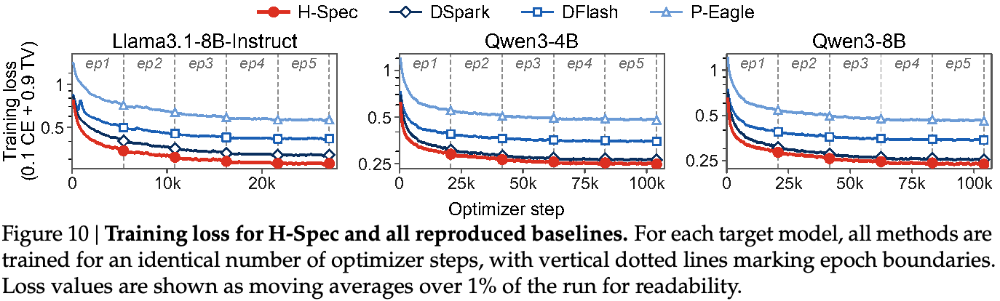
图 10 展示三个目标模型上所有方法的训练损失。在匹配的优化步数内，全部方法均稳定收敛。
B.4 草稿器架构消融设置
本节详述第 4.3 节架构消融所研究的三种草稿器变体配置。三种变体均省略 Markov 修正 head：Mamba-only 使用 Mamba-MLP（接下页）
1 https://huggingface.co/datasets/jiamingshan/qwen3-4b-dflash-official100k-prepared
（接上页）层，并注入最后一个 token 的隐藏状态；Attention-only 使用复用目标 KV 的 attention-MLP 层；Hybrid 结合 Mamba 与 attention。完整 H-Spec 在混合主干之上添加 Markov head。
对于 Mamba-only 和 Attention-only，我们保持 Mamba／attention 与 MLP 模块维度和完整 H-Spec 一致，将两者均增加至五层以匹配参数量，总参数量差异最多为 5.2%。完整 H-Spec 的 Mamba 初始状态注入使用五个所选目标层的最后 token 隐藏状态，三个 attention 模块则复用其中三个层的 KV。Attention-only 中，额外两层 attention-MLP 复用其余两个目标层的 KV，保持所选目标层整体集合不变。
C 评估结果的统计不确定性分析
我们报告 95% bootstrap 置信区间（CI），量化 MAL（\(\tau\)）与 ITL 加速比的统计不确定性，并通过配对 bootstrap 分析评估 H-Spec 相对于基线的改进是否具有统计显著性。
对单任务 \(\tau\) 与 Spd.，我们对该任务请求进行 10,000 次 bootstrap 重采样以估计 95% CI：每次从原始请求中有放回采样，并在重采样集合上重新计算 \(\tau\) 与 Spd.。对八任务平均结果，则在各任务内部独立重采样请求，重新计算任务级 \(\tau\) 和 Spd.，再将各指标在八个任务间平均。重复这一过程 10,000 次，得到任务平均 \(\tau\) 和 Spd. 的 bootstrap 分布，由此估计其 95% CI。
C.1 单请求 MAL 与加速比
作为表 2 的补充，我们评估 H-Spec 相对于基线的提升，在八任务平均以及单任务设置下是否具有统计显著性。
所有任务的平均。我们在 H-Spec 与 DSpark 之间开展配对 bootstrap 分析；DSpark 在三个目标模型的任务平均 \(\tau\) 和 Spd. 上均为最优基线。按 Llama3.1、Qwen3 4B 和 8B 的顺序，H-Spec 相对于 DSpark 的 \(\tau\) 相对提升的 95% CI 分别为 [+9.0%, +17.5%]、[+4.3%, +5.6%]、[+8.0%, +9.4%]，Spd. 的 CI 分别为 [+10.2%, +15.1%]、[+4.7%, +5.9%]、[+7.9%, +9.4%]。全部 CI 完全高于 0，表明增益具有统计显著性。
逐任务／模型设置。在八项任务与三个目标模型构成的 24 项设置中，H-Spec 在 22/24 项取得最佳 \(\tau\)，在 23/24 项取得最佳 Spd.。对于 H-Spec 领先的 45 项（任务、目标模型、指标）设置，我们分别将其与该设置对应的最优基线进行配对 bootstrap 分析。在 42/45 项中，95% CI 高于零，表明领先具有统计显著性。其余三项（Llama3.1 的 Math 与 Chat 上的 Spd.，以及 Qwen3-4B 的 Transl. 上的 \(\tau\)）中，由于 CI 包含零，对最优基线的领先不具统计显著性，但相对于次优基线的提升仍显著。
C.2 对采样参数的敏感性
作为表 3 的补充，我们在所有采样配置和目标模型设置下，将 H-Spec 与最优基线进行配对 bootstrap 分析（Llama3.1／Greedy 下为 P-Eagle，其余设置均为 DSpark）。在贪心采样下，按 Llama3.1、Qwen3 4B 和 8B 的顺序，H-Spec 相对于最优基线的 \(\tau\) 提升的 95% CI 分别为 [+8.1%, +15.3%]、[+3.7%, +5.8%] 和 [+7.6%, +9.4%]。不截断采样下，95% CI 分别为 [+0.6%, +18.6%]、[+4.1%, +5.2%] 和 [+7.5%, +9.5%]。全部 CI 完全高于零，表明 H-Spec 的 \(\tau\) 增益在多种采样参数设置下均具有统计显著性。
C.3 对推理时草稿长度的敏感性
作为表 4 的补充，我们将 H-Spec 与所有推理时草稿长度设置中的最优基线 DSpark 进行配对 bootstrap 分析。在 \(k=3/5/7\) 下，H-Spec 相对于 DSpark 的 \(\tau\) 优势的 95% bootstrap CI（接下页）
（接上页）分别为 [+3.8%, +4.8%]、[+5.1%, +6.4%] 和 [+8.0%, +9.4%]；加速比的 CI 分别为 [+4.8%, +5.8%]、[+5.5%, +6.5%] 和 [+7.9%, +9.4%]。所有配对 CI 均高于零，表明 H-Spec 在不同推理时草稿长度设置下的领先具有统计显著性。
C.4 对上下文长度的敏感性
作为图 9 的补充，我们在每项（任务、上下文长度分桶）设置下，将 H-Spec 与最优基线进行配对 bootstrap 分析；两任务的 1K 上下文下最优基线均为 P-Eagle，其余设置为 DSpark。所有设置的 95% CI 均高于零，其中最窄的优势区间是 cite 的 32K 上下文设置下的 [+5.8%, +8.6%]。这一结果表明，H-Spec 的混合上下文注入在各上下文长度下始终有效，说明其对 attention 漂移具有稳健性（Eldenk et al., 2026）。
D 扩展评估
D.1 DeepSpec 任务上的单请求评估
作为第 4.1 节的补充，我们在 DSpark 作者发布的九任务基准套件上，提供额外的平均接受长度（\(\tau\)）及 ITL 加速比评估，将其称为 DeepSpec 套件。这些任务用于原始 DFlash 与 DSpark 论文，扩展了评估覆盖范围。
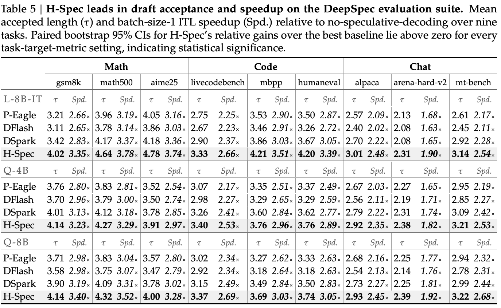
如表 5 所示，H-Spec 在草稿接受情况和 batch 大小为 1 的 ITL 加速比上继续领先。九任务平均下，针对 Llama、Qwen3 4B 和 8B 目标模型，相对于最优基线，H-Spec 的 \(\tau\) 分别提升 12.5%、3.8% 和 6.4%；加速比优势分别为 13.1%、4.3% 和 7.5%。关键在于，H-Spec 在每个被评估目标模型的每项任务中均领先，且所有情形下成对比较的 95% bootstrap CI 均高于零。这进一步说明其跨多种领域的增益一致。
D.2 与 DFlash-2 的初步比较
我们与 DFlash 团队最新的后续工作 DFlash-2（Inco AI, 2026）进行初步比较。DFlash-2 保留原始 DFlash 的 block diffusion 草稿主干与 KV 注入机制（接下页）
（接上页）（图 2），但增加两项组件：（1）在每个 attention 和 MLP 模块前后放置 two-tap 卷积核，将各位置隐藏表示与前一位置的表示混合；（2）路径选择器，对各草稿位置 top-16 候选之间的相邻候选对打分，选择连贯的草稿序列。两者共同更好地捕获 token 间依赖，提供一种能够与现有因果修正机制竞争的替代方案。
我们在 Qwen3-8B 目标模型上，使用与第 4 节一致的训练方案复现 DFlash-2。遵循第 4.2 节，在 MATH、LiveCodeBench 和 Alpaca 工作负载上，以并发量 \(C\in\{8,16,32,64,128\}\) 提供请求服务，报告 decoding 吞吐量（每秒输出 token 数）及平均 KV cache 利用率（%）。
说明：我们尽所能使用 Speculators（Red Hat, 2025）和 vLLM（Kwon et al., 2023）框架实现 DFlash-2 训练与推理流水线。总体而言，在统一训练方案下，我们的 DFlash-2 实现优于 DFlash 与 DSpark，与 DFlash-2 作者报告的趋势一致。
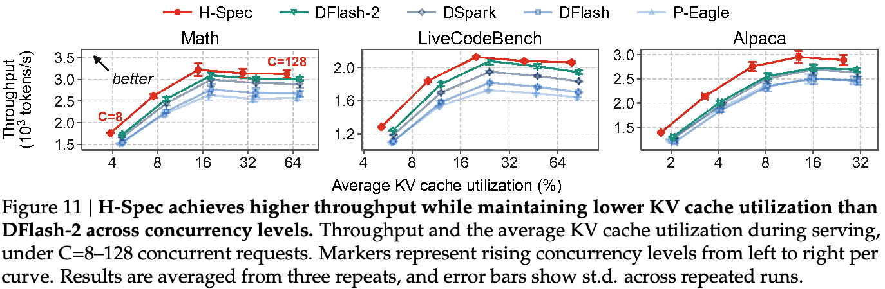
如图 11 所示，相对于 DFlash-2，H-Spec 在 MATH 上最高吞吐量提升 4.2%，LiveCodeBench 上提升 2.4%，Alpaca 上提升 8.4%；在全部并发量和任务设置下，平均 KV cache 利用率降低 9.7–20.2%。在所有基线中，DFlash-2 的最高吞吐量与 H-Spec 差距最小，反映其相对于 DSpark 改进的草稿质量。然而，DFlash-2 并未缩小 KV cache 利用率差距，因为其 block diffusion 主干和 KV 注入机制保持不变。
我们认为，H-Spec 与 DFlash-2 的贡献基本正交：H-Spec 通过混合 Mamba-attention 主干提出新的目标上下文注入，而 DFlash-2 将卷积和路径选择器作为附加组件加入并行草稿主干，以捕获 token 间依赖。这些组件可融入我们的设计：卷积可加入混合主干，路径选择器可替代 Markov head，成为因果修正机制。我们将这些组件的评估与集成留作重要的未来方向。
D.3 扩展敏感性分析
作为第 4.4 节的补充，我们报告额外目标模型 Llama3.1-8B-IT 和 Qwen3-4B 上的分析实验。总体而言，分析结论在各目标模型上均成立。
对草稿长度的敏感性。表 6 表明，在两个目标模型的不同推理时草稿长度下，H-Spec 的 \(\tau\) 和加速比均继续领先。相对于最优基线的 \(\tau\) 和加速比优势，大体随草稿长度增加而增大，与 Qwen3-8B 上的观察一致。
长上下文泛化。如图 12 所示，在额外目标模型上的两项 HELMET 任务中，H-Spec 在各上下文长度下均取得最佳 \(\tau\)。这说明随着上下文长度增加，混合上下文注入持续提供强目标条件信息。
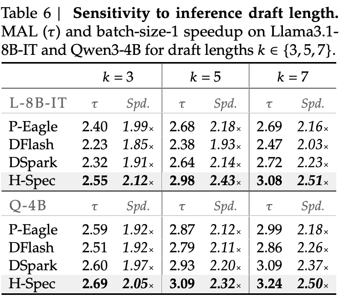
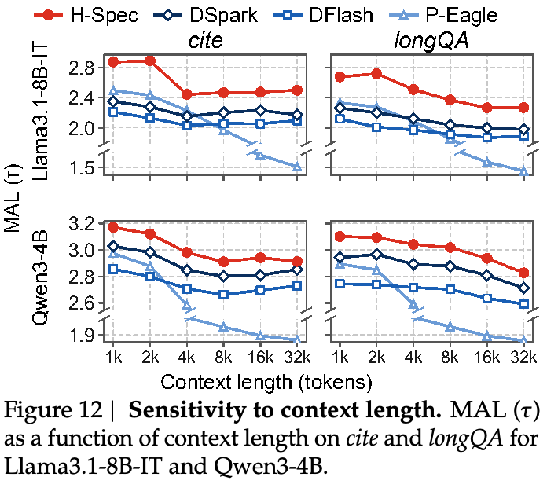
D.4 向微调目标模型的零样本迁移
为评估 H-Spec 的增益在目标模型变化下的稳健性，我们将草稿器以零样本方式迁移，部署到从原始训练目标模型微调得到的额外目标模型上。报告八项扩充 Spec-Bench 任务的平均 \(\tau\) 与 Spd.。
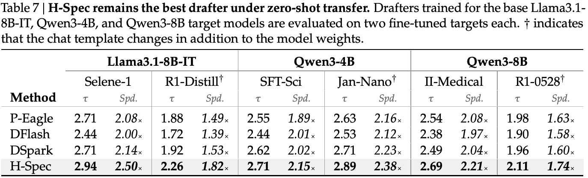
如表 7 所示，无论只迁移权重，还是同时迁移权重与聊天模板，H-Spec 都保持最优草稿器表现，说明其增益对目标模型变化具有稳健性。配对 bootstrap 95% CI 表明，在 11/12 项（目标迁移、指标）设置中，H-Spec 相对于最优基线的增益具有统计显著性。唯一例外是 SFT-Sci 的 \(\tau\)：相对于最优基线 DSpark 的增益 CI 包含零；但在此设置下，相对于次优基线 P-Eagle 的领先仍具有统计显著性。